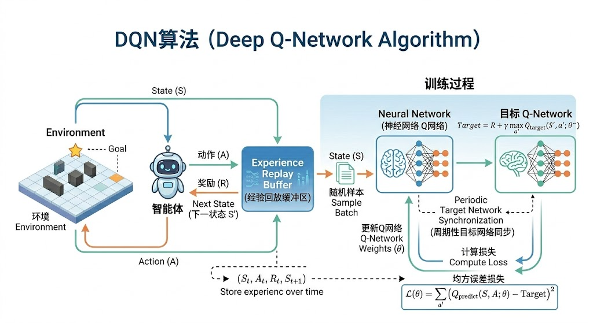
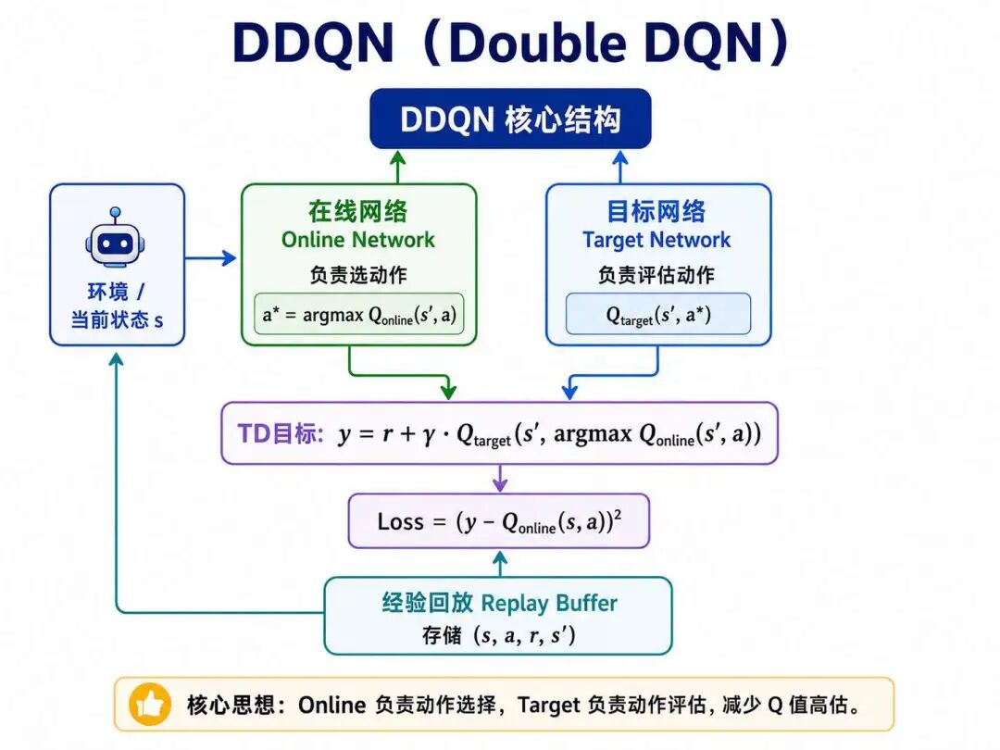

世界上的人们正在挨饿，不是因为我们没有足够的食物，而是因为我们没有组织，而计算机就是其中的一部分。——谷歌创始人拉里佩奇
Q-Learning算法的提出填补了时序差分算法在“离线策略”学习方向上的空白，但是Q-Learning依赖Q表存储状态-动作值，意味着普通Q表的存储的空间终究有限，一旦碰到高维状态，比如图片输入和连续空间的场景，Q表存储和计算的效率就会极低。
这个问题要如何解决呢？我们可以重新思考一下Q表的本质是什么？Q表的本质其实是一种对应关系的集合，在给定的“状态”下输出相应的“动作”，因此其本质也可以看作是一个函数，而我们知道深度神经网络具备非常强大的函数表达能力，这就使得深度学习在强化学习领域开始有了用武之地。
DQN（Deep Q-Network）是DeepMind团队在2015年发表于Nature的论文《Human-level control through deep reinforcement learning》中提出的深度强化学习算法。它通过三大核心技术：用神经网络逼近Q函数、经验回放、目标网络，对传统Q-Learning进行了根本性改造，实现了从高维感官输入（如游戏像素）中直接学习控制策略的突破。

核心思想自然是沿用Q-learning的时序差分（TD）更新：
$$ Q(s_t, a_t) \leftarrow Q(s_t, a_t) + \alpha \left[ r_{t+1} + \gamma \max_{a} Q(s_{t+1}, a) - Q(s_t, a_t) \right] $$首先是用神经网络代替Q表，也就是参数化Q函数，增加网络参数 $\theta$：
$$ Q(s, a; \theta) \approx Q^*(s, a) $$“约等于”不是“直接”等于，而是“通过训练+神经网络的拟合能力”逐渐逼近，本质是用神经网络学习最优Q函数的“映射规律”，替代Q表的暴力存储。
根据“万能逼近定理”，只要神经网络的层数/神经元数量足够，就能以任意精度拟合任意连续的映射关系。这里的 $Q(s,a;θ)$ 就是用神经网络去“学习” $Q^*(s,a)$ 的映射：$θ$ 是网络的参数，相当于神经网络的“记忆”，记录了 $(s,a)$ 和价值之间的关联规律。
注意：约等于号左侧表达式中的分号“;”是数学/机器学习中的符号约定，用来明确分隔“输入变量”和“模型参数” ，θ不是输入参数，而是模型自身的“可学习参数”
$Q(s,a;θ)$ 的意思是“基于模型参数 $θ$，输入 $(s,a)$ 得到的价值预测”，分号是为了清晰区分“用户输入的数据”和“模型自身的参数”，要注意 $θ$ 不是输入参数。
既然是神经网络，那就必定有模型结构，我们看看基于Q函数的神经网络结构是怎样的。
神经网络的优化离不开损失函数，DQN将TD目标作为标签，最小化均方误差（MSE）：
$$ L(\theta) = \mathbb{E}_{(s,a,r,s') \sim D} \left[ \left( \underbrace{r + \gamma \max_{a'} Q(s', a'; \theta^-)}_{\text{目标 Q 值}} - Q(s, a; \theta) \right)^2 \right] $$注释版：
$$ \underbrace{L(\theta)}_{\text{DQN损失函数}} = \underbrace{\mathbb{E}_{(s,a,r,s') \sim D}}_{\substack{\text{对经验回放池}D \\ \text{中样本取期望}}} \left[ \left( \underbrace{r + \gamma \max_{a'} Q(s', a'; \theta^-)}_{\text{目标Q值}} - \underbrace{Q(s, a; \theta)}_{\text{当前网络预测Q值}} \right)^2 \right] $$其中 $\theta$ 是在线网络（也叫主网络）的参数，每一步训练都会通过梯度下降更新； $\theta^-$ 是目标网络的参数，定期（每隔若干步）从 $\theta$ 复制过来，在更新间隔内保持固定，用来提供稳定的训练目标； $D$ 则是经验回放池（详见后文）。这套"在线网+目标网+经验回放"的组合，构成了DQN的基本骨架。
DQN虽然成功将深度学习引入强化学习领域，但存在一个严重缺陷：系统性地高估某些动作的价值。
为什么会这样？看一下DQN的目标值公式 $y = r + \gamma \max_{a'} Q(s', a'; \theta^-)$，这里的 $\max$ 操作其实在做两件事：先挑出估值最大的动作（argmax），再用这个估值评估它的价值，而这两步都由目标网络 $\theta^-$ 一手包办。
这有什么弊端呢？当网络存在估计误差（噪声）时， $\max$ 会优先挑出那些恰好被高估的动作，相当于把噪声里偏高的那一侧系统性地放大，导致Q值整体被高估。
而这种"最大化偏差"会导致学习不稳定，甚至使训练好的策略在实际应用中表现不佳，部分游戏甚至出现"崩盘"现象。
为了解决 $\max$ 操作内部"既挑动作又评价值"导致的高估问题，DDQN（Double DQN）于2015年由Hado van Hasselt、Arthur Guez和David Silver提出，核心创新在于：分离动作选择和价值评估的角色，由在线网络参数负责动作选择，目标网络参数负责评估动作价值。注意DDQN并没有引入新的网络结构（它和DQN一样是一个在线网+一个目标网），只是改变了目标值的计算方式。

(1)在线网络（Online Network）： 在线网络负责实时与环境交互，根据当前状态用 $\varepsilon$-贪婪策略选择动作，同时也负责计算当前状态-动作对的Q值 $Q(s, a; \theta)$（预测值）。在更新目标值时，它还承担一个关键角色：挑选下一状态 $s'$ 下当前估值最高的动作，其参数 $\theta$ 在每一步训练中通过梯度下降更新。
$$ a^* = \arg\max_{a'} \textcolor{red}{Q(s', a'; \theta)} $$即“用在线网络挑出下一状态 $s'$ 下当前看来最好的动作 $a^*$”。
(2)目标网络（Target Network）： 目标网络负责评估在线网络挑出的动作 $a^*$ 的价值，进而生成目标Q值（TD目标）。其参数（记为 $\theta^-$ ）定期从在线网络复制（硬更新）或缓慢同步（软更新），在更新间隔内保持固定，提供稳定的训练目标。
$$ \text{目标 Q 值}\ \ y = r + \gamma\, \textcolor{red}{Q(s', a^*; \theta^-)} $$把两步合在一起，就是DDQN完整的目标值公式：
$$ y^{\text{DDQN}} = r + \gamma\, Q\!\left(s',\ \arg\max_{a'} Q(s', a'; \textcolor{red}{\theta});\ \textcolor{red}{\theta^-}\right) $$对比一下DQN的目标值 $y^{\text{DQN}} = r + \gamma \max_{a'} Q(s', a'; \theta^-)$ ：DQN在 $\theta^-$ 内部一手包办"挑动作"和"评价值"，max会把估值噪声里偏高的那一侧放大；DDQN则让 $\theta$ 来挑、$\theta^-$ 来评，机制上切断了误差通过 $\max$ 自我放大的链条。
这两个网络的另一个区别在于更新节奏：在线网络（Online Network）参数 $\theta$ 是实时更新的，用于预测当前Q值 $Q(s,a;\theta)$ ；而目标网络（Target Network）参数 $\theta^-$ 则是滞后更新（如每 $C$ 步把 $\theta$ 复制过来），用于计算目标Q值 $Q(s,a;\theta^-)$ 。
设置两套网络的另一个重要作用是稳定训练目标，避免"追自己尾巴"的问题，俗称移动目标问题，moving target problem。
为什么会有这个问题？因为TD目标值依赖于网络自身的输出，而非独立的标签。如果用同一个网络既算预测又算目标，每次梯度下降更新 $\theta$ 后，目标值马上随之变化；
而神经网络的高度非线性会放大微小参数变化，导致目标值剧烈波动。把目标值的计算交给参数滞后更新的 $\theta^-$ ，相当于在一段时间内把目标"钉住"，让在线网络在固定靶子下稳定学习，再周期性地把最新参数同步给目标网络。这样训练就稳得多。
至于"智能体与环境连续交互产生的样本具有强时序关联”，如自动驾驶中连续帧图像高度相似，这个问题指的是当不断输入高度相似的样本给神经网络时，其梯度更新的方向在这段时间内始终一致，微小参数的变化累积过多，可能发生梯度爆炸，类似于高中课堂学习过的"指数爆炸”，则要靠下面要介绍的经验回放来解决。
(3)损失函数 损失函数 $L(\theta)$ 是预测值与目标值之间的均方误差（MSE）：
$$ \text{TD误差}\ \ \delta = y^{\text{DDQN}} - Q(s, a; \theta) $$详细版：
$$ L(\theta) = \mathbb{E}_{(s,a,r,s') \sim D} \left[ \left( \underbrace{r + \gamma\, Q\!\big(s',\, \arg\max_{a'} Q(s', a'; \theta);\, \theta^-\big)}_{\text{目标值 } y^{\text{DDQN}}} - \underbrace{Q(s, a; \theta)}_{\text{预测值}} \right)^2 \right] $$深度强化学习DQN中的另一大突破的核心技术是经验回放，用于解决数据时序相关性和样本效率问题。其核心思想是将智能体与环境交互的经验元组，即状态转移元组存储于缓冲区，训练时随机采样批次数据以满足独立同分布的假设。
每个经验元组(s,a,r,s')包含了以下四个元素： 状态（state）：当前环境观测 动作（action）：智能体执行的动作 奖励（reward）：环境反馈的即时奖励 下一状态（state'）：执行动作后的新状态
将这个转移元组 (s, a, r, s', done) 存入固定容量的回放缓冲区：Replay Buffer，训练时从中随机采样小批量数据更新网络： 存储：每次交互生成的经验按时间顺序存入缓冲区（先进先出）。 采样：更新时随机抽取批次数据，打破时间相关性，模拟独立同分布数据。 * 重用：每条经验可被多次使用，显著提高数据利用率。
这里多提一下，经验回放策略分为多种，有优先级经验回放，聚类经验回放等，这里介绍一下聚类经验回放（CER），正好可以回顾我们之前在机器学习章节学习的聚类算法。
聚类经验回放（CER）是强化学习中面向经验采样优化的策略，核心目标是解决传统均匀采样忽略低优先级关键经验（如探索初期稀有事件）的问题，通过融合聚类算法实现经验样本的多样化、均衡化采样。
首先按训练过程的时间步长划分连续的经验子区间，避免不同阶段经验（如探索阶段vs利用阶段）的特征混杂，保障每个子区间内经验的时序独立性。
然后对每个子区间内的经验样本，提取状态特征：观测向量、动作-状态转移特征，采用聚类算法（如k-means、DBSCAN）进行分组，将特征相似的经验归为同一聚类。此步骤的核心是保证类内经验的代表性与类间经验的多样性，避免冗余经验占用回放池空间。
模型训练时，从每个聚类中均匀抽取等量样本，确保高频经验不会主导采样过程，同时强制覆盖探索初期稀有事件等低优先级关键经验，提升训练数据的有效性。
我们用下面一段伪代码来实现DDQN：
# 1
初始化经验回放池 M，容量为 N # 存储历史经验（状态、动作、奖励等）
初始化在线网络 Q 的参数 θ # 主网络，用于动作选择和实时更新
初始化目标网络 Q̂ 的参数 θ̂ ← θ # 目标网络，提供稳定目标Q值
设置超参数：折扣因子 γ、学习率 α、探索率 ε、目标网络更新频率 C
# 2episode
for episode in range(最大训练回合数):
初始化环境，获取初始状态 s
while not 回合终止:
# 3. 动作选择（ε-贪婪策略）
if 随机数 < ε:
a ← 随机选择动作 # 探索
else:
a ← argmaxₐ Q(s, a; θ) # 利用在线网络选择最优动作
# 4. 执行动作并存储经验
执行动作 a，观测奖励 r、下一状态 s'、是否终止 done
将转移样本 (s, a, r, s', done) 存入经验池 M
s ← s' # 状态更新
# 5. 训练网络（当经验池数据足够时）
if len(M) > 最小批次大小:
# 5.1 从经验池随机采样
采样批次样本 {(sᵢ, aᵢ, rᵢ, sᵢ', doneᵢ)} ∼ M
# 5.2 计算目标Q值（DDQN：在线网选动作，目标网评价值）
for 每个样本 i:
if doneᵢ:
yᵢ = rᵢ
else:
aᵢ* = argmaxₐ Q(sᵢ', a; θ) # 在线网络挑下一状态最优动作
yᵢ = rᵢ + γ · Q̂(sᵢ', aᵢ*; θ̂) # 目标网络评估该动作的价值
# 5.3 计算损失并更新在线网络
预测值 = Q(sᵢ, aᵢ; θ)
损失 L = 均方误差(yᵢ - 预测值) # MSE损失函数
梯度下降更新 θ ← θ - α · ∇L(θ) # 反向传播优化在线网络
# 5.4 定期同步目标网络（硬更新）
if 训练步数 % C == 0:
θ̂ ← θ # 复制在线网络参数到目标网络
# 6. 探索率衰减（可选）
ε ← ε · 衰减系数 # 逐步减少随机探索，增强利用用送外卖场景理解DDQN完整工作原理（含参数+公式+场景映射）
把DDQN的核心逻辑映射到外卖配送场景：外卖员（智能体）通过“实时调整路线的调度大脑”（在线网络）和“参考历史最优的经验库”（目标网络），不断学习“怎么选路线、拼单”才能多赚钱（高奖励），同时避免超时（低惩罚）。
作为一个新骑手，你一开始没有经验。DDQN的强大之处在于它让你拥有两个“大脑”来学习：
这就好比你有两个师傅：一个带你跑单、还负责"指路"（在线网络挑动作），一个每晚帮你冷静地"打分"复盘（目标网络评价值），两者配合让你进步更快更稳。
再根据马尔科夫决策五要素明确场景核心映射（对应DDQN关键元素）
| DDQN核心元素 | 送外卖场景具体含义 |
|---|---|
| 状态 $s_t$ | 外卖员当前状态：如“位置在A小区南门、距离商家300米、距离用户1.2公里、订单剩余配送时间8分钟、天气晴、有1个顺路拼单机会”（用向量/矩阵量化） |
| 动作 $a_t$ | 可选决策：如“ 1.走主干道（快但可能堵车）； 2.走小巷（绕路但畅通）； 3.接顺路拼单； 4.不接拼单直接送”（离散动作集合） |
| 奖励 $r_t$ | 动作带来的即时收益：如“按时送达+5元（r=+5）、超时扣3元（r=-3）、接拼单额外赚2元（r=+2）、绕路浪费时间（r=-1）” |
| 终止标记 $done_t$ | 订单完成（done=True，后续无奖励）；未完成（done=False，需继续决策） |
| 经验回放缓冲区 D | 外卖员的“历史配送日志”：记录每次配送的「当前状态→选的动作→拿到的奖励→下一状态→是否完成」（如“A小区→走小巷→按时送达+5→到B小区→done=True”） |
| 参数类型 | 符号/名称 | 送外卖场景含义 |
|---|---|---|
| 双网络参数 | 在线网络参数 $\theta$ | 实时更新的“调度大脑”：记录当前学到的“状态→最优动作”映射（比如“雨天+剩余时间少→选主干道”） |
| 双网络参数 | 目标网络参数 $\theta^-$ | 滞后更新的“经验库”：每C步从在线网络复制一次，用来给在线网络挑出的动作打一个稳定的分数 |
| 超参数 | $\varepsilon$ (贪心系数) | 探索率：如 $\varepsilon$ = 0.1（90%按当前最优路线送，10%随机选路线探索新捷径） |
| 超参数 | $\gamma$ (折扣因子) | 未来奖励权重：如 $\gamma$ = 0.9（重视后续收益，比如接拼单虽然当下绕路，但后续多赚2元仍值得） |
| 超参数 | N (批量采样数) | 每次学习从“历史日志”中抽32条配送记录（批量训练，提升效率） |
| 超参数 | C (硬更新步数) | 每送100单（C=100），把“调度大脑”的最新策略复制到“历史经验库”（目标网络更新） |
| 超参数 | $\tau$ (软更新系数) | 若用软更新，$\tau$ = 0.001（每次送单后，“经验库”缓慢吸收0.1%的最新策略） |
| 超参数 | $\eta$ (学习率) | 调度大脑的“调整幅度”：如 $\eta$ = 1e-4（每次学习只微调策略，避免矫枉过正） |
第一步：跑单采集数据（交互环境，填充经验回放）
1）外卖员（智能体）当前状态 $s_t$ ：“位置在A小区南门、距离商家300米、剩余配送时间8分钟、天气晴、有1个顺路拼单”；
2）用 $\varepsilon$-贪心策略选动作 $a_t$ ：90%概率选在线网络（$\theta$）推荐的“接拼单+走小巷”（当前最优），10%概率随机选“走主干道”（探索新路线）；
3）执行动作后：接拼单+走小巷，按时送达，拿到奖励 $r_t=5$（配送费）+2（拼单补贴）=7，下一状态 $s_{t+1}$：“位置在B小区北门、无待配送订单”，订单完成（$done_t=True$）；
4）把经验 tuple ($s_t, a_t, r_t, s_{t+1}, done_t$) 存入“历史配送日志”（经验回放缓冲区 D）。
这一步的核心目的是用 $\varepsilon$-贪心平衡“送熟悉的最优路线（利用）”和“尝试新路线（探索）”，避免错过更优方案；而经验回放缓冲区相当于“积累配送案例”，后续学习时从案例中总结规律，避免连续遇到堵车等特殊情况导致策略跑偏。
第二步：在线网络挑动作（调度大脑选出"看起来最优"的方案）
当需要计算“如果选这个动作，后续能赚多少钱”时，先从“历史日志”（D）中抽32条配送记录（批量采样N=32），对每条记录的下一状态 $s_{t+1}$ 进行如下的操作，比如“位置在C小区、剩余配送时间5分钟、天气阴”：
1）把 $s_{t+1}$ 输入在线网络（$\theta$），得到所有动作的“预估收益”：走主干道（Q=4）、走小巷（Q=6）、接拼单（Q=8）、不接拼单（Q=5）；
2）选预估收益最高的动作 $a^* = \arg\max_{a'} Q(s_{t+1}, a'; \theta)$ → “接拼单”。
这一步的核心目的是将在线网络看作是“实时更新的调度大脑”，能捕捉最新情况（比如最近小巷不堵车），所以用它来挑"当前看起来最优的动作"，保证决策时效性。注意这里只负责"挑"，并不直接拿在线网络的Q值当作目标。
第三步：目标网络评价值（经验库给出稳定参考）
对第二步选中的动作 $a^*$（"接拼单"），改用目标网络（ $\theta^-$ ，历史经验库）来评估它的"稳定预估收益" $Q(s_{t+1}, a^*; \theta^-)$ ，再结合即时奖励 $r_t$ 和终止标记 $done_t$ ，得到目标收益（目标Q值） $y_t$ ：
$$ y_t = r_t + \gamma \cdot (1 - done_t) \cdot Q(s_{t+1}, a^*; \theta^-) $$代入场景数值，比如 $r_t=7$ ， $\gamma=0.9$ ， $done_t=1$ （订单完成），目标网络评估 $Q(s_{t+1}, a^*; \theta^-)=0$ ：
$$ y_t = 7 + 0.9 \cdot (1 - 1) \cdot 0 = 7 $$这里有几个关键细节：
这一步的核心目的是用"经验库"的稳定评估替代"调度大脑"的实时评估。关键在于：第二步用 $\theta$ 挑、第三步用 $\theta^-$ 评，挑动作和评价值用的是不同网络，这就避免了DQN里"一个网络既选又评，max把噪声放大"的高估问题。
第四步：更新网络参数（调度大脑学习优化）
1）对32条采样记录，用在线网络（$\theta$）计算每条记录中“当时选的动作”的“预估收益”$Q(s_t, a_t; \theta$)（比如之前选“接拼单”时，在线网络预估收益是6）；
2）计算损失函数（衡量“预估收益”和“实际目标收益”的差距），公式对应： $\mathcal{L}(\theta) = \frac{1}{32} \sum_{i=1}^{32} \left( Q(s_{t,i}, a_{t,i};\theta) - y_{t,i} \right)^2$
代入单条记录数值（预估收益6，目标收益7）：单条损失=$(6-7)^2=1$，批量平均损失为32条的平均值；
3）用梯度下降（Adam优化器）最小化损失，更新在线网络参数 $\theta$：$\theta \leftarrow \theta - \eta \cdot \nabla_\theta \mathcal{L}(\theta)$
比如 $\eta=1e-4$，微调 $\theta$，让下次再遇到“A小区+拼单机会”时，在线网络预估“接拼单”的收益更接近实际的7；
4）目标网络更新：每送100单（C=100），把当前在线网络（$\theta$）的“最新调度策略”复制给目标网络（$\theta^- \leftarrow \theta$），让“经验库”同步最新的最优经验。
这一步的核心目的是让“调度大脑”从历史配送案例中学习，不断修正“状态→动作→收益”的映射，比如慢慢学会“雨天+剩余时间少→不接拼单+走主干道”；
而目标网络延迟更新，可以避免“经验库”频繁变动，保证训练过程稳定，不会今天觉得小巷好，明天又觉得主干道好。
DDQN的双网络协作，本质是外卖员的“实时调度大脑”和“历史经验库”分工配合：
1）调度大脑（$\theta$）：实时跑单、选路线，同时在复盘时挑出下一路口看起来最优的动作，从历史日志中学习并不断优化策略；
2）历史经验库（$\theta^-$）：固定一段时间的最优经验，给调度大脑挑出的那个动作打一个客观分数，避免它一边挑一边给自己打高分（这正是DQN里高估收益的根源）；
3）整个过程就像外卖员：一边跑单积累案例，一边参考自己过去的最优业绩，由"现在的自己挑路线、过去稳定的自己来评分"，不断调整路线和拼单策略，最终实现"多赚钱、少超时"的目标。
深度Q网络（DQN, Deep Q-Network） 用深度神经网络替代Q表来近似动作价值函数的强化学习算法。它把"状态-动作→价值"的对应关系从有限的表格存储升级为连续的函数拟合，从而突破了传统Q-Learning在高维状态（如游戏像素、连续空间）下存储与计算效率极低的瓶颈，首次实现了从原始感官输入端到端地学习控制策略。
万能逼近定理（Universal Approximation Theorem） 只要神经网络的层数与神经元数量足够，就能以任意精度拟合任意连续的映射关系。这是用神经网络替代Q表的理论依据——它保证了 $Q(s,a;\theta)$ 有能力逐渐逼近真实的最优价值函数 $Q^*(s,a)$，把"暴力存储每一个状态-动作值"转化为"学习一套可泛化的映射规律"。
目标网络（Target Network, θ⁻） 一套参数滞后更新、专门用于生成TD目标值的网络。它定期从在线网络复制参数、在更新间隔内保持冻结，本质是为训练提供一个暂时固定的"靶子"。其核心意义在于把不断漂移的学习目标"钉住"，让在线网络能在稳定目标下持续优化，是DQN训练得以收敛的两大支柱之一。
移动目标问题（Moving Target Problem） 强化学习区别于监督学习的核心难点之一：TD目标值本身依赖网络自身的输出，而非独立固定的标签。每次梯度更新都会牵动目标值跟着变化，网络如同"追着自己的尾巴跑"，加之神经网络的高度非线性会放大微小参数扰动，导致目标值剧烈波动、难以收敛。目标网络正是为缓解这一问题而生。
经验回放（Experience Replay） 将智能体与环境交互产生的转移元组 (s, a, r, s', done) 存入固定容量的缓冲区，训练时从中随机采样小批量数据。它通过打乱时间顺序来打破连续样本间的强相关性，逼近独立同分布假设；同时让每条经验可被反复使用，大幅提升样本利用率。这是DQN摆脱时序相关性、稳定训练的关键技术。
最大化偏差（Maximization Bias） DQN在计算目标值时用 $\max$ 操作在同一个目标网络内部"既挑动作又评价值"，当网络存在估计噪声时，max会系统性地偏向那些恰好被高估的动作，使Q值整体被抬高。这种偏差会让学习不稳定，甚至使训练好的策略在实战中"崩盘"，是催生DDQN的直接动因。
双深度Q网络（DDQN, Double DQN） 对DQN的针对性改进，核心是将"动作选择"与"价值评估"两个角色解耦：由在线网络 $\theta$ 挑出下一状态的最优动作，再由目标网络 $\theta^-$ 评估这个动作的价值。它并未引入新的网络结构，仅改变了目标值的计算方式，就从机制上切断了误差通过max自我放大的链条，有效缓解了高估问题。
聚类经验回放（CER, Clustering Experience Replay） 一种面向采样优化的经验回放策略：先按训练时间步长划分经验子区间，再用聚类算法（如k-means、DBSCAN）将特征相似的经验归为一类，训练时从每个聚类中均匀抽取等量样本。它的价值在于防止高频经验主导采样，强制覆盖探索初期的稀有关键事件，提升训练数据的多样性与有效性。